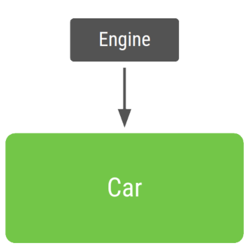
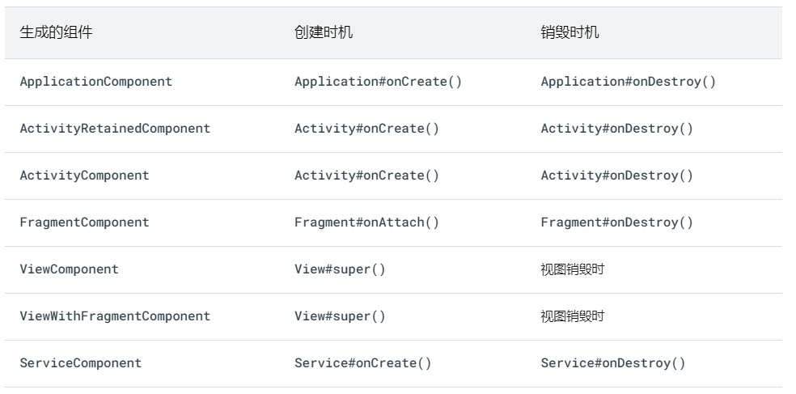
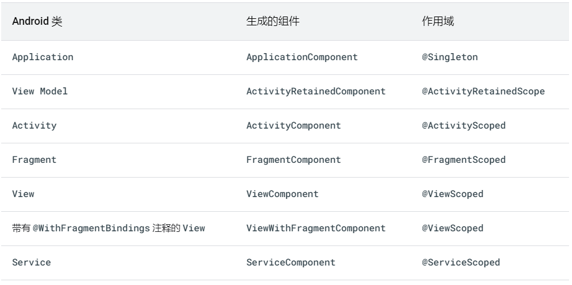
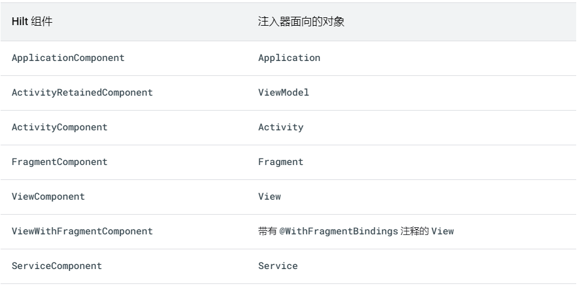
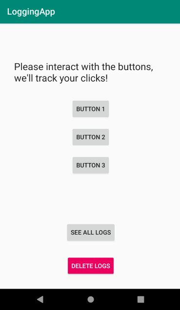

依赖项注入
依赖项注入 (DI) 是一种广泛用于编程的技术，非常适用于 Android 开发。遵循 DI 的原则可以为良好的应用架构奠定基础。
实现依赖项注入可为您带来以下优势：
- 重用代码
- 易于重构
- 易于测试
什么是依赖项注入？
类通常需要引用其他类。例如，Car 类可能需要引用 Engine 类。这些必需类称为依赖项，在此示例中，Car 类依赖于拥有 Engine 类的一个实例才能运行。
类可通过以下三种方式获取所需的对象：
1.类构造其所需的依赖项。在以上示例中，Car 将创建并初始化自己的 Engine 实例。
2.从其他地方抓取。某些 Android API（如 Context getter 和 getSystemService()）的工作原理便是如此。
3.以参数形式提供。应用可以在构造类时提供这些依赖项，或者将这些依赖项传入需要各个依赖项的函数。在以上示例中，Car 构造函数将接收 Engine 作为参数。
第三种方式就是依赖项注入！使用这种方法，您可以获取并提供类的依赖项，而不必让类实例自行获取。
看一下在不使用依赖项注入的情况下的代码示例：
1 | class Car { |
再看一下使用依赖项注入的情况下的代码示例：
1 | class Car(private val engine: Engine) { |

第一段代码的问题：
1.Car 和 Engine 关联太密切
2.对 Engine 的强依赖使得测试更加困难
Android 中有两种主要的依赖项注入方式：
- 构造函数注入。这就是上面描述的方式。您将某个类的依赖项传入其构造函数。
- 字段注入（或 setter 注入。某些 Android 框架类（如 Activity 和 Fragment）由系统实例化，因此无法进行构造函数注入。使用字段注入时，依赖项将在创建类后实例化。
Hilt是推荐用于在 Android 中实现依赖项注入的 Jetpack 库。Hilt通过为项目中的每个 Android 类提供容器并自动为您管理其生命周期，定义了一种在应用中执行 DI 的标准方法。
Hilt在热门 DI 库 Dagger 的基础上构建而成，因而能够受益于 Dagger 提供的编译时正确性、运行时性能、可伸缩性和 Android Studio 支持。
官方文档
项目地址：https://github.com/googlecodelabs/android-hilt
文档地址：https://developer.android.com/codelabs/android-hilt#0
下面文章将直接使用官方项目的代码进行解释说明，项目中有两个分支 master 和 solution，master是没有使用Hilt进行依赖项注入的代码，solution则是使用Hilt对原有代码进行重构后的代码，功能两者基本保持不变，为了讲解Hilt的一些功能，solution中的功能稍微多一点基本相同。
项目需求：用户通过 button 与软件进行交互，并将交互记录到Room数据库,可以查看和删除记录。效果如下：
添加依赖项
打开根 build.gradle 文件
1 | buildscript { |
然后，为在 app 模块中使用 gradle 插件，我们应在 app/build.gradle 文件中指定它，具体方法为：将 gradle 插件添加到此文件的顶部、kotlin-kapt 插件之下：
1 | ... |
最后，Hilt 依赖项会包含在项目的同一个 app/build.gradle 文件中：
1 | ... |
Hilt使用
Hilt应用类
所有使用 Hilt 的应用都必须包含一个带有 @HiltAndroidApp 注释的 Application 类。@HiltAndroidApp 会触发 Hilt 的代码生成操作，生成的代码包括应用的一个基类，该基类充当应用级依赖项容器。
1 | @HiltAndroidApp |
生成的这一 Hilt 组件会附加到 Application 对象的生命周期，并为其提供依赖项。此外，它也是应用的父组件，这意味着，其他组件可以访问它提供的依赖项。
使用 Hilt 实现字段注入
LogsFragment 会在 onAttach 中填充其字段。我们可以使用 Hilt 来创建和管理 LoggerLocalDataSource 和 DateFormatter 的实例，而不是使用 ServiceLocator 手动填充这些类型的实例。
如要让 LogsFragment 使用 Hilt，我们需要为其添加 @AndroidEntryPoint 注解。
1 |
|
为 Android 类添加 @AndroidEntryPoint 注解会创建一个沿袭 Android 类生命周期的依赖项容器。
Hilt目前支持以下 Android 类型：Application（通过使用@HiltAndroidApp）、Activity、Fragment、View、Service和BroadcastReceiver。
Hilt仅支持扩展FragmentActivity（例如AppCompatActivity）的 activity 和扩展 Jetpack 库Fragment的 fragment，不支持 Android 平台中的Fragment（现已弃用）。
如果您使用 @AndroidEntryPoint 为某个 Android 类添加注释，则还必须为依赖于该类的 Android 类添加注释。例如，如果您为某个 Fragment 添加注释，则还必须为使用该 Fragment 的所有 Activit 添加注释。
利用 @AndroidEntryPoint，Hilt 可创建附着于 LogsFragment 生命周期的依赖项容器，并能够将实例注入 LogsFragment。如何让 Hilt 进行字段注入？
对于要进行注入的字段（例如 logger 和 dateFormatter），我们可以利用 @Inject 注解让 Hilt 注入不同类型的实例：
1 | @AndroidEntryPoint |
这就是所谓的字段注入。
由于 Hilt 将负责赋值这些字段，因此我们不再需要 populateFields 方法。让我们从类中移除该方法：
1 | @AndroidEntryPoint |
在后台，Hilt 将使用自动生成的 LogsFragment 依赖项容器中内置的实例在 onAttach() 生命周期方法中填充这些字段。
组件生命周期
Hilt 会按照相应 Android 类的生命周期自动创建和销毁生成的组件类的实例。

告知 Hilt 如何通过 @Inject 提供依赖项
要执行字段注入，Hilt 需要知道如何提供这些依赖项的实例！在本例中，Hilt 需要知道如何提供 LoggerLocalDataSource 和 DateFormatter 的实例。但是，Hilt 还不知道如何提供这些实例。
如要告知 Hilt 如何提供类型的实例，请向要注入的类的构造函数添加 @Inject 注解。
1 | class DateFormatter @Inject constructor() { ... } |
将实例的作用域限定为容器
默认情况下，Hilt 中的所有绑定都未限定作用域。这意味着，每当应用请求绑定时，Hilt 都会创建所需类型的一个新实例。
不过，Hilt 也允许将绑定的作用域限定为特定组件。Hilt 只为绑定作用域限定到的组件的每个实例创建一次限定作用域的绑定，对该绑定的所有请求共享同一实例，即在限定作用域的实例是同一个实例。
下表列出了生成的每个组件的作用域注释：

在原项目中无论何时调用 ServiceLocator，它始终返回 LoggerLocalDataSource 的相同实例,所以我们希望 application 容器始终提供 LoggerLocalDataSource 的相同实例,因此为其类添加 @Singleton 注解：
1 | @Singleton |
如果绑定在层次结构的较高层级中可用，那么在较低层级的容器中也可用。因此，如果
LoggerLocalDataSource的某个实例在application容器中可用，那么它在 activity 和 fragment 容器中也可用。
现在，Hilt 知道如何提供 LoggerLocalDataSource 实例了。但是，这一次，该类型具有传递依赖项！如要提供 LoggerLocalDataSource 实例，Hilt 还需要知道如何提供 LogDao 实例。
不过，由于 LogDao 是一个接口，而接口没有构造函数，因此我们无法为其构造函数添加 @Inject 注解。该怎么告知 Hilt 如何提供该类型的实例？
Hilt 模块
模块用于向 Hilt 添加绑定，换句话说，用于告知 Hilt 如何提供不同类型的实例。在 Hilt 模块中，您可以为无法通过构造函数注入的类型（例如接口或未包含在您项目中的类）添加绑定。
Hilt 模块是带有@Module 和 @InstallIn 注解的类。@Module 会告知 Hilt 这是一个模块，而 @InstallIn 会通过指定 Hilt 组件告知 Hilt 绑定在哪些容器中可用
Hilt 提供了以下组件：

对于每个可被 Hilt 注入的 Android 类，都有一个关联的 Hilt 组件。例如，Application 容器与 SingletonComponent 相关联，而 Fragment 容器与 FragmentComponent 相关联。
创建模块
创建一个可添加绑定的 Hilt 模块。创建一个名为 DatabaseModule.kt 的新文件，由于 LoggerLocalDataSource 的作用域限定为 application 容器，因此 LogDao 绑定需要在 application 容器中可用。我们通过传递与其相关联的 Hilt 组件的类（即 SingletonComponent:class），使用 @InstallIn 注解指定该要求：
1 | @InstallIn(SingletonComponent::class) |
LogDao 的实例通过调用 logsDatabase.logDao() 来获取。因此，为了提供 LogDao 的实例，我们在 AppDatabase 类上创建了一个传递依赖项。
使用 @Provides 提供实例
我们可以在 Hilt 模块中为函数添加 @Provides 注解，告知 Hilt 如何提供无法通过构造函数注入的类型。
每当 Hilt 需要提供相应类型的实例时，都会执行带有 @Provides 注解的函数的函数主体。带有 @Provides 注解的函数的返回值类型会告知 Hilt 绑定的类型，即如何提供该类型的实例。函数参数是该类型的依赖项。
在本例中，我们将此函数包含在 DatabaseModule 类中：
1 | @InstallIn(SingletonComponent::class) |
上述代码告知 Hilt 当提供 LogDao 的实例时需要执行 database.logDao()。由于我们将 AppDatabase 作为传递依赖项，因此还需要告知 Hilt 如何提供该类型的实例。
AppDatabase 类由 Room 生成，我们的项目也不拥有该类，因此我们也能够以类似于在 ServiceLocator 类中构建数据库实例的方式，使用 @Provides 函数提供它。
1 | @InstallIn(SingletonComponent::class) |
由于我们希望 Hilt 始终提供相同的数据库实例，因此为 @Provides provideDatabase 方法添加了 @Singleton 注解。
每个 Hilt 容器都随附一组默认绑定，可作为依赖项注入到您的自定义绑定。applicationContext 便是这样：要访问它，您需要为字段添加 @ApplicationContext 注解。
现在，Hilt 具有在 LogsFragment 中注入实例所需的全部信息。但是，在运行应用之前，Hilt 需要了解托管 Fragment 的 Activity 才能正常运作。我们需要为 MainActivity 添加 @AndroidEntryPoint 注解。
1 | @AndroidEntryPoint |
现在，您可以运行应用并检查一切是否可以像以前一样正常工作。
使用 @Binds 提供接口
MainActivity 从调用 provideNavigator(activity: FragmentActivity) 函数的 ServiceLocator 中获取 AppNavigator 的实例。
由于 AppNavigator 是一个接口，因此我们无法使用构造函数注入。要告知 Hilt 为接口使用哪种实现，您可以对 Hilt 模块内的函数使用 @Binds 注解。
必须为抽象函数添加 @Binds 注解（它是抽象的，因此不包含任何代码，且该类也需要是抽象的）。抽象函数的返回值类型是我们要提供实现的接口（即 AppNavigator）。实现通过添加具有接口实现类型（即 AppNavigatorImpl）的唯一参数指定。
Hilt 模块不能同时包含非静态和抽象绑定方法，因此您不能将 @Binds 和 @Provides 注解放在同一个类中。
1 | @InstallIn(ActivityComponent::class) |
在该模块内，我们可以为 AppNavigator 添加绑定。一个抽象函数会返回我们告知 Hilt 的接口（即 AppNavigator），而函数参数是该接口的实现（即 AppNavigatorImpl）。
现在，我们必须告知 Hilt 如何提供 AppNavigatorImpl 的实例。由于该类可以进行构造函数注入，因此我们只需为其构造函数添加 @Inject 注解。
1 | class AppNavigatorImpl @Inject constructor( |
现在，Hilt 具有注入 AppNavigator 实例所需的全部信息。打开 MainActivity.kt 文件并执行以下操作：
1.为 navigator 字段添加 @Inject 注解，以供 Hilt 获取；
2.移除 private 可见性修饰符；
3.移除 onCreate 函数中的 navigator 初始化代码。
同理通过Hilt修改ButtonsFragment中的代码，完成重构。此时已经完成了Hilt依赖项注入的代码重构，接下来将向应用添加一些新功能，以便您了解如何在不同情形中使用更高级的 Hilt 功能。
限定符
我们已从项目中移除 ServiceLocator 类，并且您学习了 Hilt 的基础知识，下面我们来向应用中添加新功能，以探索其他 Hilt 功能。
在本部分中，您将学习以下内容：
- 如何将作用域限定为 Activity 容器。
- 什么是限定符、限定符解决什么问题以及如何使用。
为展示这一部分内容，我们需要应用有不同的行为。我们会将日志存储位置从数据库切换为内存中列表，以仅记录应用会话期间的日志。
LoggerDataSource 接口
让我们开始将数据源抽象化到一个接口中。
1 | interface LoggerDataSource { |
ButtonsFragment 和 LogsFragment 这两个 Fragment 都使用 LoggerLocalDataSource。我们需要重构它们，使其改为使用 LoggerDataSource 的实例。
1 | @AndroidEntryPoint |
接下来使用两个类去实现 LoggerDataSource,这两个类分别是 LoggerLocalDataSource 和 LoggerInMemoryDataSource,他们分别是将日志记录到数据库和内存中的实现
1 | @Singleton |
1 | class LoggerInMemoryDataSource @Inject constructor( |
由于我们的应用仅包含一个 Activity（也称为“单 Activity”应用），因此我们应该在 Activity 容器中有一个 LoggerInMemoryDataSource 的实例，并在 Fragment 中重复使用该实例。
我们可以通过将 LoggerInMemoryDataSource 的作用域限定为 Activity 容器来实现内存中记录行为：创建的每个 Activity 都有自己的容器及不同的实例。在每个容器中，当 logger 需要作为依赖项或用于字段注入时，系统将提供 LoggerInMemoryDataSource 的相同实例。此外，在组件层次结构下的容器中，也将提供相同的实例
根据“将作用域限定为组件”文档，要将某个类型的作用域限定为 Activity 容器，我们需要为该类型添加 @ActivityScoped 注解：
1 | @ActivityScoped |
目前，Hilt 知道如何提供 LoggerInMemoryDataSource 和 LoggerLocalDataSource 的实例，但 LoggerDataSource 呢？Hilt 不知道请求 LoggerDataSource 时应使用哪种实现。如果我们需要在同一项目中提供两种实现，该怎么办？如我们在其他界面或服务同时要使用 LoggerLocalDataSource
同一接口的两种实现
由于 LoggerDataSource 的不同实现的作用域限定为不同的容器，因此我们不能使用同一个模块：LoggerInMemoryDataSource 的作用域限定为 Activity 容器，而 LoggerLocalDataSource 的作用域限定为 Application 容器。
1 | @InstallIn(SingletonComponent::class) |
如果类型限定了作用域，@Binds 方法必须具有限定作用域的注解，因此，上面的函数带有 @Singleton 和 @ActivityScoped 注解。如果 @Binds 或 @Provides 用作某个类型的绑定，则该类型中限定作用域的注解将不会再使用，因此您可以开始将其从其他实现类中移除。
若此时构建项目会出现报错，因为 LoggerDataSource 类型注入到了 Fragment 中，但同一类型有两个绑定，Hilt 不知道应使用哪种实现！如何告知 Hilt 应使用哪种实现呢？
使用限定符如要告知 Hilt 如何提供同一类型的不同实现（多个绑定），您可以使用限定符。
限定符是用于标识绑定的注解。
由于每个限定符将用于标识一个绑定，我们需要为每种实现定义一个限定符。在 Android 类中注入该类型或将该类型作为其他类的依赖项时，需要使用限定符注解以避免歧义。
1 | @Qualifier |
现在，我们必须使用限定符为提供每种实现的 @Binds（或 @Provides，如果我们需要它）函数添加注解。请查看完整的代码，并注意 @Binds 方法中使用的限定符：
1 | @Qualifier |
此外，在注入时，必须将这些限定符用于要注入的实现。在本例中，我们将在 Fragment 中使用 LoggerInMemoryDataSource 实现。
1 | @AndroidEntryPoint |
如果您希望更改要使用的数据库实现，只需为注入的字段添加 @DatabaseLogger 而不是 @InMemoryLogger 注解。
修改后的效果：

@EntryPoint 注释
略